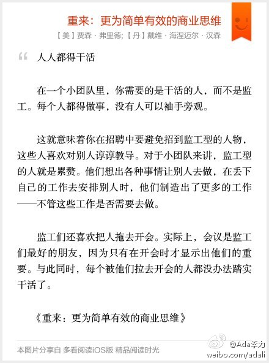

你见过这样的经理吗，每日任务就是把大家的工作汇总下，做个表格，然后再交给更高的经理？ //@电脑领养的猪: 这说的太绝对了，团队中既要有人埋头做事，更要有人探头看天，产品经理不就是抬头看到方向，发现出更多需求，于是程序员可能有更多的活了的人嘛！~~@Ada李力:人人都得干活 在一个小团队里，你需要的是干活的人，而不是监工。每个人都得做事，没有人可以袖手旁观。 这就意味着你在招聘中要避免招到监工型的人物，这些人喜欢对别人谆谆教导。对于小团队来讲，监工型的人就是累赘。他们想出各种事情让别人去做，在丢下自己的工作去安… 网页链接 